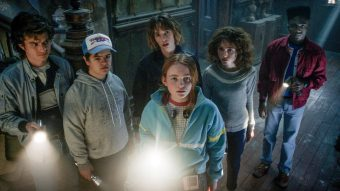

A GRANDE ESTREIA DA SÉRIE STRANGE THINGS
A duração de cada episódio passa de uma hora, o que pode parecer cansativo, porém, o roteiro foi estruturado de uma maneira que não fica exaustivo.
Muitos temas são abordados de formas simples e complementares no roteiro, como uso de drogas, preconceito, desafios da adolescência e o cuidado com a saúde psicológica. Aliás, em muitos momentos, há uma comparação nas entrelinhas da forma que é feita as possessões do novo vilão com traumas psicológicos.
Todos os acontecimentos mostram como o relacionamento entre Eleven (Millie Bobby Brown), Mike (Finn Wolfhard), Will (Noah Schnapp), Lucas (Caleb McLaughlin), Max (Sadie Sink) e Dustin (Gaten Matarazzo) pode ser remodelado de várias maneiras e passando por vários sentimentos, como o ciúmes, a tristeza, a saudade e a dedicação.
Outro ponto forte da série foi a trilha sonora escolhida pelos irmãos Duffer e Nora Felder, supervisora musical, que traz músicas clássicas dos anos 80, auxiliando na inserção do espectador para dentro do contexto da série.
Trazendo várias cenas bem feitas e com grande atuação da atriz que interpreta MaxNossa Lojinha Virtual
Nosso estabelecimento está localizado no coração da cidade.
Motivos para ir correndo assistir Stranger Things
- Trilha Sonora que arranca emoções.
- Clima de terror dos anos 80 que transborda na quarta temporada.
- Will tentando entender os seu sentimentos.
- Grandes edições de cena e climax tenso.
- E personagens novos.
Assista ao trailer para ter um gostinho de como está incrível temporada!